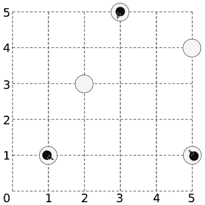

Home Page
F.A.Qs
Statistical Charts
Past Contests
Scheduled Contests
Award Contest
| Online Judge | Problem Set | Authors | Online Contests | User | ||||||
|---|---|---|---|---|---|---|---|---|---|---|
| Web Board Home Page F.A.Qs Statistical Charts | Current Contest Past Contests Scheduled Contests Award Contest | |||||||||
|
Language: March of the Penguins
Description Somewhere near the south pole, a number of penguins are standing on a number of ice floes. Being social animals, the penguins would like to get together, all on the same floe. The penguins do not want to get wet, so they have use their limited jump distance to get together by jumping from piece to piece. However, temperatures have been high lately, and the floes are showing cracks, and they get damaged further by the force needed to jump to another floe. Fortunately the penguins are real experts on cracking ice floes, and know exactly how many times a penguin can jump off each floe before it disintegrates and disappears. Landing on an ice floe does not damage it. You have to help the penguins find all floes where they can meet.  A sample layout of ice floes with 3 penguins on them. Input On the first line one positive number: the number of testcases, at most 100. After that per testcase:
Output Per testcase:
Sample Input 2 5 3.5 1 1 1 1 2 3 0 1 3 5 1 1 5 1 1 1 5 4 0 1 3 1.1 -1 0 5 10 0 0 3 9 2 0 1 1 Sample Output 1 2 4 -1 Source |
[Submit] [Go Back] [Status] [Discuss]
All Rights Reserved 2003-2013 Ying Fuchen,Xu Pengcheng,Xie Di
Any problem, Please Contact Administrator